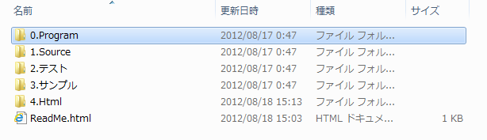
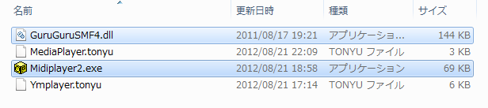
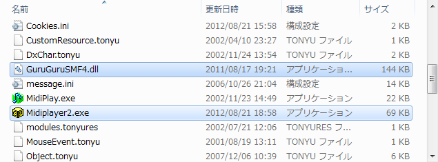
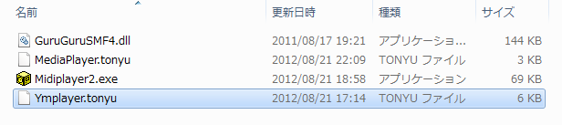
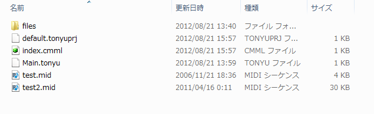
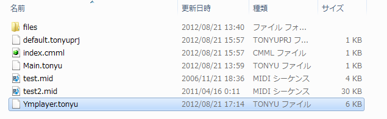
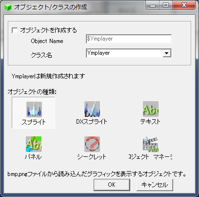
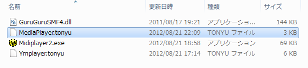
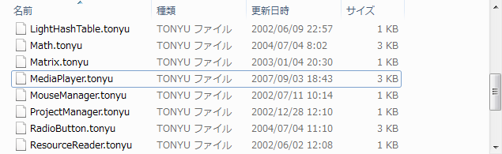
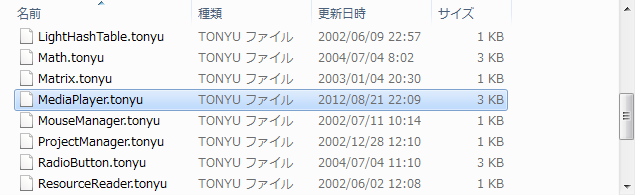

導入方法
導入方法
YellowMusicPlayerの導入
ダウンロードしたファイルの「0.Program」フォルダ内に本体が入っています。

導入には「Midiplayer2.exe」と「GuruGuruSMF.dll」が必要なので、この２つをコピーしてください。

YellowMusicPlayerを導入したいTonyuランタイム版または開発環境版の、Kernelフォルダを開きます。
先程の「GuruGuruSMF.dll」と「Midiplayer2.exe」を、Kernelフォルダへ貼り付けしてください。
（「Midiplayer2.exe」は上書きしてください）

Kernelフォルダ内に「GuruGuruSMF.dll」と「Midiplayer2.exe」が貼り付けられたら導入完了です。

Ymplayer.tonyuの導入
従来のMidiPlayer2のように、Midiの再生・停止だけであれば上記だけで結構ですが、
YellowMusicPlayerの機能を使うには、Ymplayer.tonyuも導入してください。
また、標準の$mplayerにはバグの原因となるコードがあるので、
気になる場合は、Ymplayer.tonyuを導入してください。
Ymplayer.tonyuは「0.Program」フォルダ内に入っています。
「Ymplayer.tonyu」をコピーします。

YellowMusicPlayerの機能を使いたいゲームプロジェクトのフォルダを開きます。

「Ymplayer.tonyu」を貼り付けます。

Tonyuの開発環境版を開き、先ほどのゲームプロジェクトを開きます。
下の画像のように、「オブジェクトを作成する」のチェックをはずし、
クラス名の欄に「Ymplayer」と打ち込み、OKを押します。

あとは、プログラム内でYmplayerクラスのオブジェクトを生成し、
そのオブジェクトからメソッドを使えば、YellowMusicPlayerの機能を使うことができます。
オブジェクトを生成する際、「$mplayer = new Ymplayer();」とすると、
今まで$mplayerを使っていたプログラムも改変せずにそのまま使えるので便利です。
Ymplayer.tonyuの導入しない場合
従来のMidiPlayer2のように、Midiの再生・停止だけであれば、Ymplayer.tonyuを導入する必要はありません。
上記の「YellowMusicPlayerの導入」を行うだけで、すぐにYellowMusicPlayerを使えます。
しかし、従来の$mplayerにはバグの原因となるコードがあるので、
Ymplayer.tonyuの導入しない場合は、修正版「MediaPlayer.tonyu」を上書きすることをお勧めします。
修正版MediaPlayer.tonyuは「0.Program」フォルダ内に入っています。
「MediaPlayer.tonyu」をコピーします。

YellowMusicPlayerを導入したTonyuランタイム版、または開発環境版の
Kernelフォルダ内のUtilフォルダを開きます。

「MediaPlayer.tonyu」を貼り付けて上書きします。

戻る